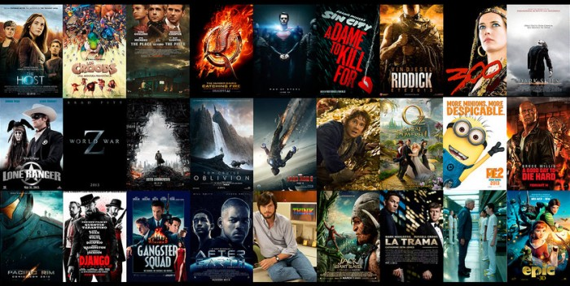

Dicas de Filmes e Séries
Com o isolamento social sendo a forma mais eficaz de se evitar o contágio de COVID-19 em massa, preparamos para você uma seleção de ótimos filmes e séries para ter uma quarentena mais animada possível. Confira:

Filmes:
- O Poderoso Chefão
- Ilha do Medo
- A Origem
- Pulp Fiction
- Forrest Gump
- Matrix
- O Resgate do Soldado Ryan
- O Grande Truque
- Bastardos Inglórios
- Um Sonho de Liberdade
=>Voltar ao topo
Séries:
- Supernatural
- Sherlock
- The Walking Dead
- Game of Thrones
- Brooklyn Nine-Nine
- Breaking Bad
- Stranger Things
- La Casa de Papel
- Better Call Saul
- The Last Kingdom
=>Voltar ao topo